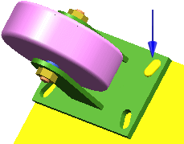

使用塞焊/槽焊命令来使用现有孔或槽把两块重叠的平板焊接在一起。

您可以：
插入塞焊/槽焊到指定的两个体上的面，并定义塞/槽的标准，塞焊/槽焊通过孔将体连接在一起
使用塞焊/槽焊来通过孔把一个材料表面连接到另一个上，孔可能被焊接金属部分或完全填充
使用塞焊/槽焊来通过细长孔把一个材料表面连接到另一个上，孔在一端可能是开口的，可能被焊接金属部分或完全填充
将焊接符号指定到焊接特征
应用模块
建模
工具条
焊接助理→塞焊/槽焊
菜单
插入→焊接→塞焊/槽焊